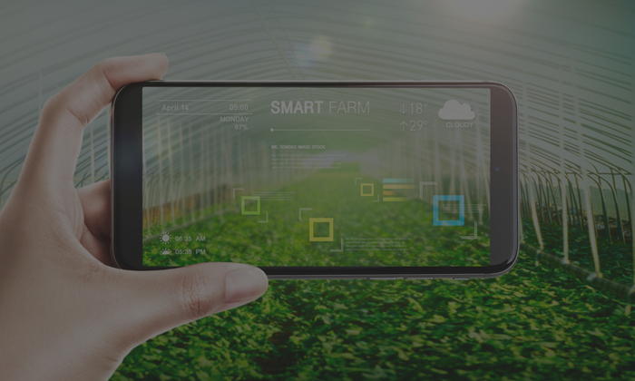

ENG
회사소개
사업분야
오시는길
공지사항
ENG
회사소개
사업분야
오시는길
공지사항
회사소개
사업분야
오시는길
공지사항
사업분야
HOME
탄소중립, 스마트그린도시
빅데이터
공간정보사업
도심 환경감시 솔루션
도심의 안전을 확보하고 재해 방지, 주거환경 개선,
환경 영향 평가를 동시에 제공
“다중 센서망을 바탕으로 자체 개발 IoT 솔루션을 제공하며,
이를 통해 도심 환경의 개선을 달성”
도심 소음, 도로환경, 조도, 악취, 풍향-풍속 등 다양한 다차원 인자 계측을 통하여
새로운 인사이트를 도출할 수 있는 기반을 마련하며 새로운 사업 표준을 만들어 갑니다.
도로안전/통행안전 감시 솔루션
노면 환경 데이터 및 주행 안전 확보를 위한 새로운 기법 제공
“범국가적 도로망 데이터의 통합 구축 및 보급”
기존 데이터가 부족했던 노면정보, 실시간 교통 재해 현황등의 정보를
원천기술을 바탕으로 실시간 제공하여 국민의 안전을 도모합니다.
스마트팜/스마트온실 재배기
능동 생육 제어 기반 실시간 피드백 스마트팜
"작물의 실시간 상태를 바탕으로 관수, 시비, 광량, 환기, 수온, 용존산소 등의 인자를
즉시 조절할 수 있는 피드백 알고리즘으로 최상의 재배 조건 확보"
㈜카탈로닉스 스마트팜 재배기는 작물의 현재 상태를 인공지능을 통해 분석하여
향후 생육 전망, 생산량 전망, 현재 작물의 건강 상태, 병충해 유무 등을 포착하고
이를 즉시 조치할 수 있도록 능동 피드백 시스템을 설계하여
전자동 재배가 가능하도록 합니다.
홍보영상 보기

노지/실내 스마트팜 모니터링 솔루션
다분광 계측 기반의 새로운 재배 관리 기법
“자체 개발 지상기반 고정형 원격탐사 방법론을 바탕으로 노지 및 실내 작물, 수목, 잔디 및
기타 식생의 준-실시간 생육도 및 건강상태를 산출하여 장기 관리에 이용”
자체 보유 원천 기술인 광학 계측 기법을 바탕으로 노지, 실내, 격오지 무전원 환경 등
다양한 조건 하에서 구동가능한 원격 탐사 솔루션을 제공하여
농업의 새로운 패러다임을 이끌어 갑니다.
K-생육모델
우리나라 환경에 적합한 새로운 작물 재배 가이드라인
"작물 및 수목의 성장에 영향을 미치는 다양한 환경인자, 바이오매스,
성장 속도를 다차원 계측하여 국내 실정에 적합한 모델 도출”
생육 단계별 식물생리 분석, 주요 이온 농도 분석, 변인 통제에 기반한 생장 계측,
광학 반응 분석, 증발산량 측정을 바탕으로
주요 작물 별 생육모델을 구축하고, 향후 시뮬레이션 기반으로 활용하며
재배 관리의 데이터베이스로 산입
(주)카탈로닉스
T. 070-4355-6042
F. 070-7966-1259
E. catalonix@catalonix.com
사업자등록번호 : 133-87-00830
© 2022 Catalonix Inc. All Rights Reserved